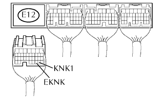
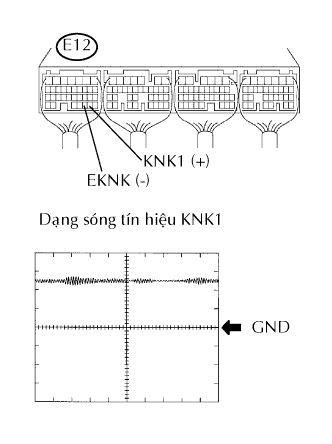
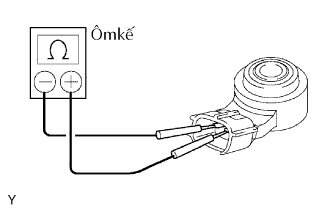

DTC P0327/52 Mạch Cảm biến tiếng gõ 1 Đầu vào thấp (Thân máy 1 hay cảm biến đơn) |
DTC P0328/52 Mạch Cảm biến tiếng gõ 1 Đầu vào cao (Thân máy 1 hay cảm biến đơn) |
| Số mã DTC | Điều kiện phát hiện DTC | Khu vực nghi ngờ |
| P0327/52 | Điện áp phát ra của cảm biến tiếng gõ là 0.5 V hay nhỏ hơn |
|
| P0328/52 | Điện áp phát ra của cảm biến tiếng gõ 4.5 V hay lớn hơn |
|
| 1.KIỂM TRA DÂY ĐIỆN (ECM - CẢM BIẾN TIẾNG GÕ) |
|  |
Ngắt giắc nối E12 của ECM.
Đo điện trở giữa của giắc nối phía dây điện.
| Nối dụng cụ đo | Điều kiện tiêu chuẩn |
| E12-29 (KNK1) - E12-30 (EKNK) | 120 đến 280 kΩ tại 20°C (68°F) |
|
| ||||
| OK | |
| 2.KIỂM TRA ECM (ĐIỆN ÁP KNK1) |
|  |
Bật khoá điện ON.
Đo điện áp của giắc nối ECM.
| Nối dụng cụ đo | Điều kiện tiêu chuẩn |
| E12-29 (KNK1) - E12-30 (EKNK) | 4.5 đến 5.5 V |
| Nối dụng cụ đo | Điều kiện tiêu chuẩn |
| E12-29 (KNK1) - E12-30 (EKNK) | Dạng sóng đúng như trong hình vẽ |
| Đặt dụng cụ | Điều kiện |
| 0.01 đến 10 V/DIV., 0.01 đến 10 msec./DIV. | Sau khi hâm nóng động cơ, giữ cho tốc độ động cơ ở 4,000 vòng/phút. |
|
| ||||
| OK | ||
| ||
| 3.KIỂM TRA CẢM BIẾN TIẾNG GÕ |
|  |
Tháo cảm biến.
Đo điện trở giữa của cảm biến.
| Nối dụng cụ đo | Điều kiện | Điều kiện tiêu chuẩn |
| 1 - 2 | 20°C (68°F) | 120 đến 280 kΩ |
|
| ||||
| OK | ||
| ||